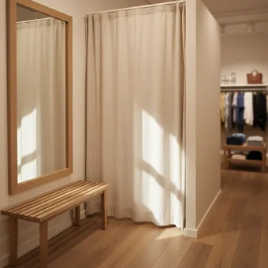
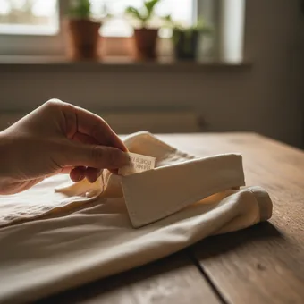
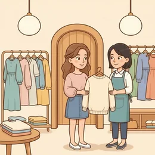
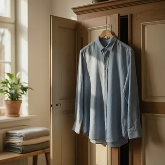
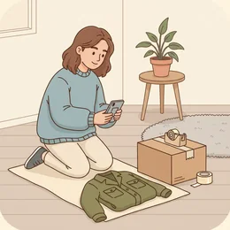
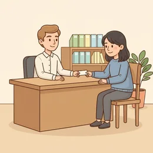

deutschoderwas · Sprechclub · Woche 6 · Strang A · Teil 2 · Mittwoch, 21. Oktober
Kleidung kaufen: Größe, Farbe und der Weg zurück
Im Laden reichen drei Sätze: Ich suche etwas, ich hätte gern eine andere Größe, ich möchte das umtauschen. Klingt einfach — aber genau an diesen drei Stellen bleiben die meisten stecken. Heute holen wir uns die Sätze und die Kassenbon-Wahrheiten dazu.
Dein Niveau
Gleiche Situationen, andere Sätze. Wechsle jederzeit — probier ruhig beide Seiten aus.
Der Moment vor dem Spiegel
Die Hose sitzt nicht, und draußen wartet jemand vom Personal. Jetzt bräuchtest du einen Satz — und die meisten sagen dann „ist okay“ und kaufen etwas, das sie nie tragen. Heute lernen wir den Satz.

Kaufst du Kleidung lieber im Laden oder online?
Probierst du immer an?
Was war dein letzter Kleiderkauf?
Warum ist es so schwer zu sagen, dass etwas nicht passt?
Was hast du gekauft und danach nie getragen — und warum?
Wie ist das Verkaufsgespräch in deinem Land anders als hier?
🔑 Die Formel für heute:Was ist + was du brauchst.„Die ist mir zu eng — hätten Sie die eine Nummer größer?“ Erst die Beobachtung, dann die Bitte. Zwei Teile, und die Verkäuferin weiß sofort, was zu tun ist.
Was hier wirklich gilt
Im Laden gekaufte Kleidung muss ein Geschäft nicht zurücknehmen, wenn sie in Ordnung ist — viele tun es freiwillig, aber es ist ihre Entscheidung. Bei einem echten Mangel sieht es anders aus. Und online gilt wieder etwas anderes.
Hebst du Kassenbons auf?
Hast du schon mal etwas umgetauscht?
Wie lange hat das gedauert?
Wann ist Umtausch Kulanz und wann ein Recht?
Kaufst du anders ein, seit du das weißt?
Wie reagierst du, wenn ein Laden sich weigert?
💡 Wichtig — und deshalb steht es hier: Diese Stunde übt die Sprache, nicht das Recht. Die Regeln sind je nach Fall verschieden, und verbindlich sagt dir das nur der Laden selbst, eine Verbraucherzentrale oder eine Rechtsberatung. Was du hier lernst, sind die Sätze, mit denen du dein Anliegen klar vorbringst.
Zwölf Wörter von der Kabine bis zur Kasse
Sagt jedes Wort laut — mit Artikel. Und gleich einen Satz hinterher: In welchem Moment im Laden brauchst du dieses Wort?

die Größe
„Haben Sie das eine Nummer größer?“
💡 Zwei Systeme nebeneinander: Zahlen (38, 40, 42) und Buchstaben (S, M, L). Der wichtigste Satz: „Haben Sie das eine Nummer größer?“ — Nummer, nicht Größe, klingt hier natürlicher.
die Umkleidekabine
„Wo sind denn die Umkleidekabinen?“
💡 Im Alltag sagt fast jeder nur die Kabine oder die Umkleide. Und das Personal fragt oft: Möchten Sie es anprobieren?

anprobieren
„Kann ich das mal anprobieren?“
💡 Trennbar: Ich probiere es an. Und ein Wort weiter: ausprobieren heißt „testen“ und geht mit allem — Ich probiere das Rezept aus.

passen
„Das Hemd passt mir gut.“
💡 Mit Dativ: Es passt mir. Nicht verwechseln mit stehen: Die Farbe steht dir heißt, dass sie dir gut aussieht — das ist eine andere Frage.
zu eng
„Im Ärmel ist es mir zu eng.“
💡 Die vier Wörter, die du im Laden brauchst: zu eng, zu weit, zu kurz, zu lang. Und immer mit mir: Es ist mir zu eng.

die Beratung
„Werden Sie schon beraten?“
💡 Diese Frage hörst du in jedem Laden. Zwei Antworten reichen: „Ich schaue erst mal.“ oder „Ja, gern — ich suche …“ Beide sind völlig normal.
der Kassenbon
„Haben Sie den Kassenbon noch?“
💡 Auch der Bon, der Beleg oder die Quittung. Beim Umtausch ist er die erste Frage — deshalb hebt man ihn auf, bis das Stück wirklich getragen wurde.
umtauschen
„Ich möchte das gern umtauschen.“
💡 Trennbar. Und beachte den Unterschied: umtauschen = gegen etwas anderes, zurückgeben = Geld zurück. Im Laden fragt man meist erst nach dem Umtausch.
der Mangel
„Hier ist ein Mangel — die Naht ist offen.“
💡 Das Wort, das den ganzen Ton ändert: Ein Mangel ist etwas anderes als „gefällt mir nicht“. Sag ihn konkret: Die Naht ist offen. Der Reißverschluss klemmt.
reduziert
„Die Jacke ist um dreißig Prozent reduziert.“
💡 Ein Satz, den man an der Kasse oft hört: „Reduzierte Ware ist vom Umtausch ausgeschlossen.“ Ob das im Einzelfall gilt, sagt dir der Laden — aber du solltest wissen, was der Satz bedeutet.
die Farbe
„Gibt es den Mantel auch in Dunkelblau?“
💡 Sehr nützlich: „Gibt es das auch in …?“ Damit fragst du nach jeder Variante — Farbe, Größe, Material. Und die Farbe steht dir ist das Kompliment dazu.

sich entscheiden
„Ich kann mich nicht entscheiden.“
💡 Immer mit sich und mit für: Ich entscheide mich für den blauen. Und der ehrlichste Satz im Laden: „Ich überlege es mir noch.“ Damit darfst du jederzeit gehen.
💡 Spiel „Passt nicht“: Einer nennt ein Kleidungsstück und ein Problem — Hose zu lang, Jacke zu eng, Schuhe zu klein, Farbe zu grell. Der Nachbar sagt sofort den vollständigen Satz an die Verkäuferin: Beobachtung plus Bitte. Wer nur meckert und nichts erbittet, gibt weiter.
Umtauschen, zurückgeben, reklamieren — was denn nun?
Drei Wörter, die im Laden ständig durcheinandergehen. Sie führen zu drei ganz verschiedenen Gesprächen — und du entscheidest mit dem ersten Satz, welches du führst.
🔁
umtauschen
gegen etwas anderes tauschen — andere Größe, andere Farbe
Ich möchte das in Größe 40 umtauschen.
💶
zurückgeben
zurück und Geld wieder haben
Kann ich das zurückgeben?
🧵
reklamieren
etwas ist kaputt oder fehlerhaft
Ich möchte das reklamieren, die Naht ist offen.
✅ So kommst du weiter
Die Naht ist an zwei Stellen offen — ich möchte das reklamieren.
Warum das wirktDu nennst einen konkreten Mangel und sagst, was du willst. Damit ist klar, dass es nicht um Geschmack geht — und das Gespräch läuft ganz anders.
❌ So bleibst du stecken
Das Ding taugt nichts, ich will mein Geld zurück.
Das ProblemTaugt nichts ist ein Urteil, kein Mangel. Und der Ton macht aus einem einfachen Vorgang eine Auseinandersetzung, in der beide Seiten hart werden.
✅ So sagt man es
Die ist mir zu eng — hätten Sie die eine Nummer größer?
Warum das funktioniertBeobachtung und Bitte in einem Satz. Die Verkäuferin weiß sofort, was sie holen soll, und niemand muss raten.
❌ So kommt nichts zurück
Die ist zu klein.
Das ProblemDer Satz beschreibt nur — es fehlt die Bitte. Sehr oft folgt dann ein „Ja, das kann sein“ und beide stehen da.
✅ So bleibst du frei
Ich überlege es mir noch, danke.
Warum das reichtEin vollständiger, höflicher Satz, der keine Begründung braucht. Du musst nichts erklären und nichts kaufen — das ist hier völlig üblich.
❌ So wird es zäh
Ähm, ja, ich weiß nicht, vielleicht, also …
Das ProblemUnsicherheit lädt zum Nachfassen ein. Ein klarer Satz beendet das Gespräch freundlich — und niemand nimmt es dir übel.
Vier Sätze, mehr brauchst du im ganzen Laden nicht:
Beim Reinkommen:Danke, ich schaue erst mal. — auf die Frage Werden Sie schon beraten?
Wenn du doch Hilfe willst:Ja, gern — ich suche eine Jacke für den Herbst.
In der Kabine:Hätten Sie das eine Nummer größer?
Zum Schluss:Ich überlege es mir noch, danke. oder Ich nehme es.
Und einer für den Notfall, wenn dir das Wort fehlt: „Ich zeige es Ihnen kurz.“ Zeigen ist erlaubt — im Laden ist das die schnellste Verständigung überhaupt.
🎯 Zu zweit, eine Minute: Einer nennt eine Situation im Laden, der andere sagt sofort den passenden von den vier Sätzen. Wer zögert oder etwas erfindet, gibt weiter.
Vier Bausteine, und der Einkauf läuft
Suchen, anprobieren, entscheiden, zurückbringen. Vier Momente, die in jedem Laden vorkommen — und für jeden ein fertiger Satz.
1 · 🔎 Suchen Ich suche …Haben Sie …?Gibt es das auch in …?Wo finde ich …?
So klingt esIch suche eine Jacke für den Herbst, so in Größe 40.
2 · 👕 Anprobieren Kann ich das anprobieren?Wo sind die Kabinen?Hätten Sie das eine Nummer größer?Das ist mir zu eng
So klingt esKann ich das mal anprobieren? Wo sind die Kabinen?
3 · 🤔 Entscheiden Ich nehme esIch überlege es mir nochDas passt gutIch kann mich nicht entscheiden
So klingt esDas passt gut — ich nehme es.
4 · 🔁 Zurückbringen Ich möchte das umtauschenHier ist der KassenbonEs passt leider doch nichtGeht das noch?
So klingt esIch möchte das umtauschen, es passt leider doch nicht.
1 · 🔎 Genauer suchen Ich suche etwas Schlichtes, nichts AuffälligesHätten Sie das auch in Naturfarben?Es sollte waschbar seinEher figurbetont oder eher weit?
So klingt esIch suche etwas Schlichtes für den Alltag — und es sollte waschbar sein.
2 · 👀 Beurteilen Im Ärmel spannt esDie Länge ist genau richtigDie Farbe ist mir zu grellDer Schnitt gefällt mir, aber …
So klingt esDer Schnitt gefällt mir, aber im Ärmel spannt es ein bisschen.
3 · 🧾 Nachfragen vor dem Kauf Wie lange kann ich das umtauschen?Gilt das auch für reduzierte Ware?Brauche ich den Bon dafür?Bekomme ich Geld zurück oder einen Gutschein?
So klingt esWie lange kann ich das umtauschen — und gilt das auch für reduzierte Ware?
4 · 🧵 Einen Mangel nennen Die Naht ist an zwei Stellen offenDer Reißverschluss klemmtNach dem ersten Waschen hat es …Das war schon beim Kauf so
So klingt esDer Reißverschluss klemmt — und das war schon beim Kauf so.
Verb das Kleidungsstück die Größe Höflichkeit
📣 Sofort anwenden: Denk an das letzte Kleidungsstück, das du gekauft hast. Sag alle vier Sätze dazu — suchen, anprobieren, entscheiden, zurückbringen. Der dritte ist der, der den meisten fehlt.
Vier Situationen — zwei Runden
Runde 1: Lest den Dialog zu zweit laut. Runde 2: Klappt die Zeilen zu und spielt ihn frei — mit einem eigenen Kleidungsstück.
Dialog 1 · „Beraten werden“
Du kommst in den Laden und wirst angesprochen. Diesmal willst du wirklich Hilfe.
A
Guten Tag, werden Sie schon beraten?
B
Noch nicht. Ich suche eine Jacke für den Herbst, nichts zu Dickes.
🗣️ Noch nicht statt eines langen Satzes — und gleich, was du suchst. Zwei Angaben reichen völlig.tippen = Hilfe zeigen
A
Welche Größe haben Sie denn?
B
Meistens 40, manchmal 42. Kommt auf den Schnitt an.
🗣️ Kommt auf … an — sehr nützlich, wenn es keine einfache Antwort gibt.tippen = Hilfe zeigen
A
Hier hätte ich zwei. Möchten Sie sie anprobieren?
B
Gern. Wo sind die Kabinen?
🗣️ anprobieren übernimmst du einfach aus ihrer Frage — und stellst gleich die praktische Frage hinterher.tippen = Hilfe zeigen
A
Ganz hinten links.
B
Danke. Ich melde mich, wenn ich noch etwas brauche.
🗣️ So bleibst du freundlich und trotzdem allein — sehr hilfreich, wenn du in Ruhe probieren willst.tippen = Hilfe zeigen
Dialog 2 · „In der Kabine“
Du stehst vor dem Spiegel, und es passt nicht ganz. Draußen wartet jemand.
A
Und, passt es?
B
Der Schnitt gefällt mir, aber im Ärmel ist es mir zu eng.
🗣️ Erst das Positive, dann das Problem. ist es mir zu eng — immer mit mir.tippen = Hilfe zeigen
A
Soll ich eine Nummer größer holen?
B
Ja bitte. Und gibt es die auch in Dunkelblau?
🗣️ Gibt es das auch in …? — die Formel für jede Variante. Zwei Bitten in einem Zug spart Wege.tippen = Hilfe zeigen
A
In Dunkelblau leider nur noch 38.
B
Dann probiere ich erst mal die größere in Grau.
🗣️ erst mal hält die Entscheidung offen, ohne dass es unentschlossen wirkt.tippen = Hilfe zeigen
A
Ich hänge sie Ihnen rein.
B
Vielen Dank, das ist nett.
🗣️ Ein Dank mit einem Wort mehr — das merkt sich das Personal, und der Rest läuft besser.tippen = Hilfe zeigen
Dialog 3 · „Umtauschen“
Zu Hause hat es doch nicht gepasst. Du bringst es zurück — freundlich und mit Bon.
B
Guten Tag. Ich möchte das gern umtauschen, es passt mir leider doch nicht.
🗣️ Anliegen im ersten Satz, Grund im zweiten Halbsatz. leider macht es weich.tippen = Hilfe zeigen
A
Haben Sie den Kassenbon dabei?
B
Ja, hier. Gekauft am Samstag, es ist noch alles dran.
🗣️ es ist noch alles dran — gemeint sind die Etiketten. Ein Satz, der viele Rückfragen erspart.tippen = Hilfe zeigen
A
Möchten Sie etwas anderes oder Geld zurück?
B
Am liebsten dasselbe in 42. Wenn Sie das nicht haben, schaue ich mich noch mal um.
🗣️ Erst der Wunsch, dann die Alternative. So bleibt das Gespräch in Bewegung.tippen = Hilfe zeigen
A
In 42 haben wir es. Einen Moment.
B
Super, danke. Das war unkompliziert.
🗣️ Am Ende etwas anerkennen — kostet nichts und macht den nächsten Besuch leichter.tippen = Hilfe zeigen
Dialog 4 · „Da ist etwas kaputt“
Nach zweimal Tragen ist die Naht offen. Das ist kein Umtausch, das ist eine Reklamation — und du sagst das auch so.
B
Ich möchte das reklamieren. Die Naht ist an zwei Stellen offen.
🗣️ reklamieren statt umtauschen — das Wort setzt den Ton. Und der Mangel gleich konkret dazu.tippen = Hilfe zeigen
A
Wann haben Sie es denn gekauft?
B
Vor drei Wochen, hier ist der Bon. Getragen habe ich es zweimal.
🗣️ Zwei Fakten ohne Ausschmückung. Wer sachlich bleibt, wird sachlich behandelt.tippen = Hilfe zeigen
A
Das sieht wirklich nicht gut aus. Ich frage kurz meine Kollegin.
B
Gern. Mir wäre ein Austausch am liebsten, es gefällt mir ja.
🗣️ Mir wäre … am liebsten — ein Wunsch im Konjunktiv, freundlich und trotzdem klar.tippen = Hilfe zeigen
A
Das bekommen wir hin. Einen Moment bitte.
B
Danke, dass Sie sich das gleich ansehen.
🗣️ Anerkennen, was jemand tut, während er es tut — das wirkt fast immer.tippen = Hilfe zeigen
🎭 Und jetzt ihr: Spielt Dialog 3 zweimal — einmal geht der Umtausch problemlos, einmal sagt das Personal Nein. Wer zurückbringt, muss beim zweiten Mal freundlich bleiben und trotzdem nachfragen, was möglich wäre.
🧩 Wem passt was: der Dativ bei passen, stehen, gefallen
Eine kleine Gruppe von Verben dreht den Satz um: Nicht du bist der Handelnde, sondern die Sache. Und du stehst im Dativ. Genau diese Verben brauchst du im Laden ständig.
Ich mag die Jacke ist normal gebaut — ich bin das Subjekt. Aber Die Jacke gefällt mir dreht alles um: Jetzt ist die Jacke das Subjekt, und ich stehe im Dativ. Dieselbe Bauweise haben passen, stehen, gehören und schmecken. Wer das einmal verstanden hat, macht in einer ganzen Wortgruppe keine Fehler mehr.
📏passen = die richtige GrößeDie Hose passt mir.
▾
🎨stehen = es sieht gut an dir ausDie Farbe steht dir.
▾
❤️gefallen = es sagt dir zuDer Schnitt gefällt mir.
▾
🔑und immer im Dativmir · dir · ihm · ihr · uns · Ihnen
Was? (Subjekt)Die Jacke
Verb an zweiter Stellepasst
Wem? (Dativ)mir
Restleider nicht.
Drei Fragen, drei verschiedene Verben
Im Laden werden diese drei ständig verwechselt. Sie beantworten aber ganz verschiedene Fragen — lies die Zeilen laut, dann sitzt der Unterschied.
📏
passen
die Größe, ganz nüchtern
Die 40 passt mir besser.
🎨
stehen
wie es an dir aussieht
Blau steht dir wirklich gut.
❤️
gefallen
ob du es magst — unabhängig von dir
Das Muster gefällt mir nicht.
Ist es die richtige Größe? → Passt es dir?Sieht es gut an dir aus? → Steht es dir?Magst du es? → Gefällt es dir?Und die häufigste Antwort: Es passt, aber es steht mir nicht.Oder umgekehrt: Es gefällt mir sehr, aber es passt nicht.
Die Dativformen auf einen Blick
Sechs Formen, mehr sind es nicht. Lies sie laut, bis sie von selbst kommen — sie funktionieren bei allen Verben dieser Gruppe gleich.
🔁
Dieselben Formen überall
bei passen, stehen, gefallen, schmecken, gehören
Es schmeckt mir. Es gehört ihr.
⚠️
Die häufigste Falle
mich statt mir
Es passt mir — nicht: Es passt mich.
🙋
Im Laden fast immer Ihnen
die höfliche Form großgeschrieben
Steht Ihnen ausgezeichnet.
ich → mir · Die Jacke passt mir.du → dir · Steht dir gut!er → ihm · Das gefällt ihm nicht.sie → ihr · Die Farbe steht ihr.wir → uns · Das gefällt uns beiden.Sie (höflich) → Ihnen · Passt es Ihnen?
🧱 Bau die Sätze selbst
Tippe die Teile in der richtigen Reihenfolge an. Denk daran: Die Sache ist das Subjekt, die Person steht im Dativ.
📖 Und jetzt im Zusammenhang
Ein Nachmittag im Laden, der zweimal fast schiefgegangen wäre. Wähle für jede Lücke das passende Wort.
An einer einzigen Frage — und die kannst du dir selbst stellen:
Wer tut hier eigentlich etwas? Bei gefallen, passen, stehen tut die Sache etwas, nicht du.
Deshalb steht die Sache vorn:Die Jacke gefällt mir, nicht Ich gefalle die Jacke.
Und du kommst in den Dativ: mir, dir, ihm, ihr, uns, Ihnen.
Die Merkgruppe: gefallen, passen, stehen, gehören, schmecken, helfen, danken — alle mit Dativ.
Ein Satz mit drei davon zum Auswendiglernen: „Die Jacke gefällt mir, sie passt mir, und die Farbe steht mir auch.“ Dreimal mir — nie mich.
🎭 Drei Situationen zu zweit
Einer ist Kundin, einer arbeitet im Laden. Danach tauschen — und beim zweiten Mal ohne Notizen.
1 · Der ganz normale Einkauf
A arbeitet im Laden, B sucht eine Jacke für den Herbst. Spielt den kompletten Ablauf: begrüßt werden, suchen, anprobieren, eine andere Größe holen lassen, entscheiden, zahlen.
Werden Sie schon beraten?Ich suche eine Jacke für den HerbstHätten Sie die eine Nummer größer?Ich nehme sie
Ich suche etwas Schlichtes, nichts AuffälligesDer Schnitt gefällt mir, aber im Ärmel spannt esGibt es die auch in Naturfarben?Wie lange kann ich das umtauschen?
✅ Eine gute Runde enthältB hat alle vier Momente durchgespielt und dabei passen, stehen oder gefallen mindestens dreimal richtig mit Dativ benutzt. Kein einziges Es passt mich.
2 · Umtausch — und einmal Nein
B bringt etwas zurück. Im ersten Durchgang klappt es problemlos. Im zweiten sagt A, dass reduzierte Ware nicht umgetauscht wird. B bleibt freundlich und fragt, was stattdessen möglich wäre.
Ich möchte das gern umtauschenHier ist der KassenbonEs passt mir leider doch nichtUnd was wäre möglich?
Ich hatte gefragt, ob das umtauschbar istGibt es die Möglichkeit eines Gutscheins?Ich verstehe die Regel, frage aber trotzdemDann behalte ich es, kein Problem
✅ Eine gute Runde enthältB ist beim Nein weder laut geworden noch sofort gegangen, sondern hat nach einer Alternative gefragt. Und im ersten Durchgang stand das Anliegen gleich im ersten Satz.
3 · Der echte Mangel
An B's Jacke ist nach zweimal Tragen die Naht offen. A ist zunächst skeptisch und vermutet einen Trageschaden. B bleibt sachlich, nennt den Mangel konkret und sagt, was er sich wünscht.
Ich möchte das reklamierenDie Naht ist an zwei Stellen offenGetragen habe ich es zweimalMir wäre ein Austausch am liebsten
Das war schon beim Kauf soIch verstehe die Frage, aber es ist normal getragen wordenKönnen Sie das jemandem zeigen, der das beurteilt?Was schlagen Sie vor?
✅ Eine gute Runde enthältB hat den Mangel konkret benannt statt allgemein zu klagen, ist sachlich geblieben und hat einen eigenen Wunsch genannt. Das Wort reklamieren kam im ersten Satz.
🎴 Sprechkarten
Zieh eine Karte und sprich mindestens vier Sätze am Stück.
Deine Aufgabe
Tippe auf den Knopf.
⏱️ Die 90-Sekunden-Challenge
Ein Kleidungsstück, anderthalb Minuten, freies Sprechen. Nicht beschreiben, wie es aussieht — sondern das ganze Gespräch im Laden führen.
Dein Wort
die Größe
1:30
Geh die vier Momente entlang, dann trägt dich die Zeit:
Was suchst du? Ich suche … für …
Wie ist es? Es passt mir … / Es ist mir zu … / Die Farbe steht mir …
Was brauchst du? Hätten Sie …? / Gibt es das auch in …?
Wie geht es aus? Ich nehme es. / Ich überlege es mir noch.
Und wenn dir ein Wort fehlt: zeig darauf und sag „So etwas in der Art, nur etwas weiter.“ Damit kommst du in jedem Laden ans Ziel.
⏱️ Spielregel: In jeder Runde müssen passen, stehen und gefallen je einmal vorkommen — alle drei mit Dativ. Der Partner hört mit und hebt bei einem mich die Hand.
✅ Sitzt es schon?
8 Fragen. Tippe auf deine Antwort — die Erklärung kommt sofort.
✍️ Lückentext
Wähle in jeder Lücke das passende Wort.
📣 Danach laut: Jeder nennt reihum ein Kleidungsstück. Der Nachbar sagt sofort drei Sätze dazu: einen mit passen, einen mit stehen, einen mit gefallen. Wer mich statt mir sagt, gibt weiter.
📮 Deine Hausaufgabe bis nächsten Montag
Vier kleine Aufgaben, zusammen etwa 25 Minuten. Nächste Woche geht es unterwegs weiter — Bus, Bahn, Ticket und der Weg.
💡 Warum das hilft:passen, stehen, gefallen sind nur der Anfang. Dieselbe Bauweise haben schmecken, gehören, helfen, danken, fehlen — eine ganze Gruppe häufiger Verben. Wer sie einmal versteht, macht bei allen keinen Fehler mehr.
0 von 0 Aufgaben geschafft.
So sehen die Sätze mit Dativ aus:
Die Jacke passt mir gut.
Die Farbe steht dir wirklich.
Der Schnitt gefällt ihm nicht.
Das Essen schmeckt uns allen.
Passt es Ihnen so?
Ein einziger Test: Frag „Wem?“ Wenn die Antwort eine Person ist, die nichts tut, sondern der etwas gefällt oder passt — dann Dativ. Nie mich.
So ist eine Reklamation an einen Shop aufgebaut:
Der Bezug: Bestellnummer, Datum, Artikel — in einer Zeile.
Der Mangel: konkret und knapp. Die Naht am rechten Ärmel ist auf etwa drei Zentimetern offen.
Der Verlauf: wann bemerkt, wie oft getragen — ohne Ausschmückung.
Dein Wunsch: Austausch, Reparatur oder Erstattung. Nenne genau einen, nicht drei.
Die Frist: eine höfliche, konkrete Zeitangabe. Ich bitte um Rückmeldung bis zum …
Und was hier Sprache und nicht Recht ist: Welche Ansprüche du im Einzelfall wirklich hast, sagen dir der Händler, die Verbraucherzentrale oder eine Rechtsberatung — nicht dieser Kurs.
📬 Abgabe: Schick deine beiden Sprachnachrichten bis Sonntagabend. Ich achte vor allem auf mir gegen mich — das ist bei diesen Verben der häufigste Fehler und einer, den man sich sonst jahrelang selbst nicht anhört.
🔜 Nächste Woche, Teil 1:Unterwegs mit Bus und Bahn. Ticket, Fahrplan, umsteigen — und am Mittwoch nach dem Weg fragen und mit Verspätungen umgehen.